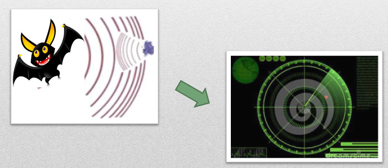
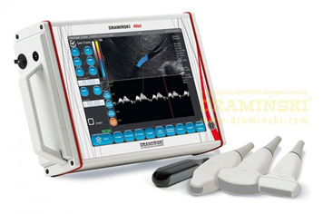

超音波在軍事、醫療及工業中有較大的用途。它應用按功率的大小可分為功率超聲和檢測超聲。 檢測超聲在軍事中的應用有雷達定位等。

典型超音波大約2MHz到10MHz的頻率，檢測超音波設備有發射及接收。

醫用超音波可以穿透肌肉及軟組織，使得這項技術常用來掃描很多器官，以協助醫療上的診斷和治療。可以利用超音波成像法透視身體，但由於超音波不能穿透骨頭，所以雖然超音波對人體傷害比較低，但仍不能完全取代X光。